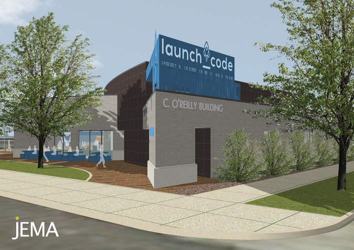

Stay At Home Mom Journey To Be A Software Developer
Hi! This is Kainat Amjad. I was born and brought up by my amazing parents in a small town in Pakistan. I completed my high school and some collge where I studied some basic Psychology in my hometown. Being a small town girl I always believed in the importance of education. I understand how education can help you in acheiving your dreams.
Mardan, Kpk Pakistan.My life In United States
I came to Saint Louis in 2015. Here I am living with my wonderful husband and two beautiful children. As a Stay at home mom with two toddlers, a girl and a boy. These days due to Covid-19, I homeschool my 4 year old. Besides that I love cooking, doing DIY projects with my family together and travelling.
.My Journey To The Tech World
I always wanted to complete my education. I always wanted to study programming but I going to college full time was not easy for me while taking care of my kids. One day I was in my neighborhood, my neighbor came out and we had a litle talk about continuing my education. She realized that I am into computers and after few days she came to me again with launchcode information. I applied instantly. I could not wait more because this was something I have always wanted, something that I can do while taking care of my family, something that did not ask me about my qualification in college degree.
I believe that one day I am going to achieve all that I have been wanting for so long.
 Launchcode